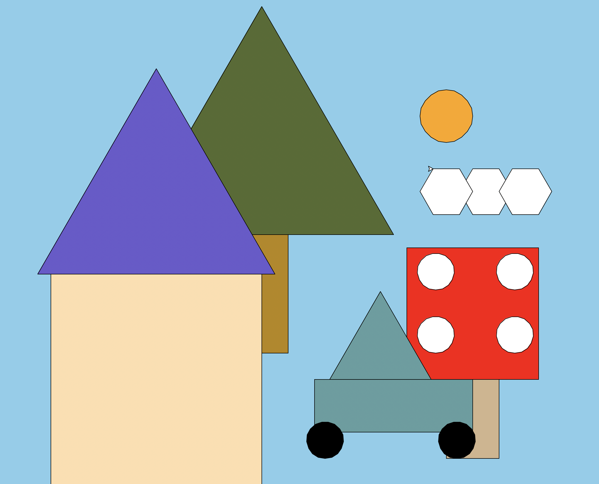
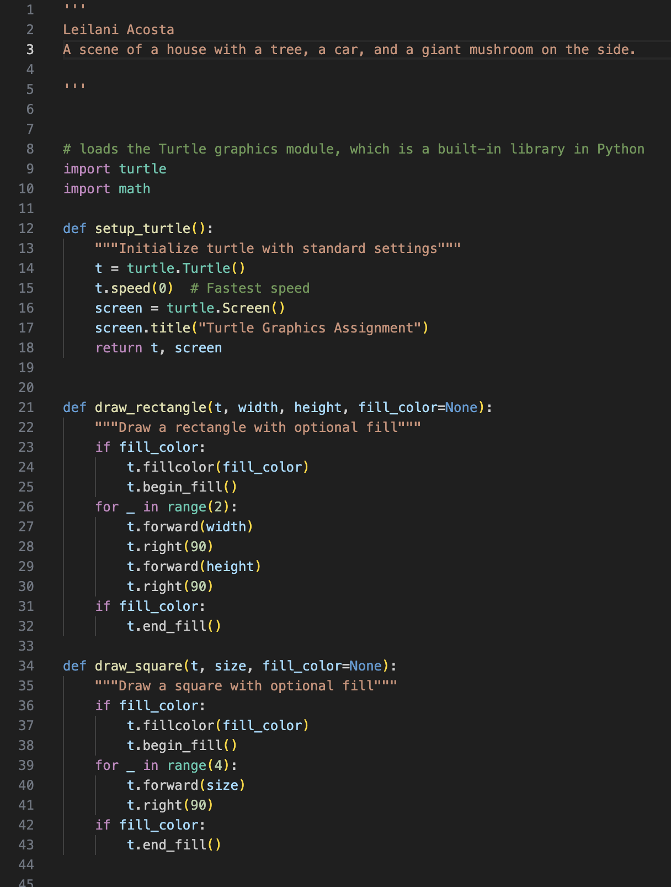
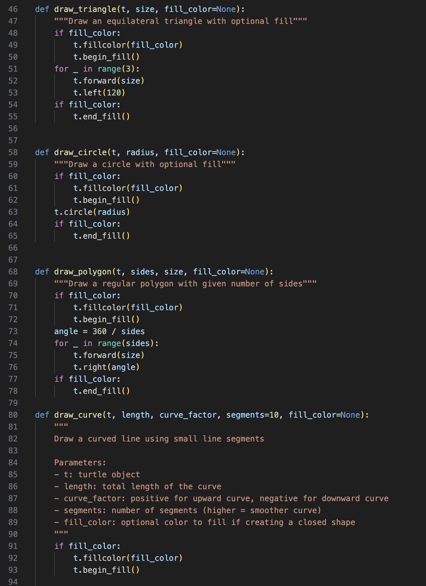
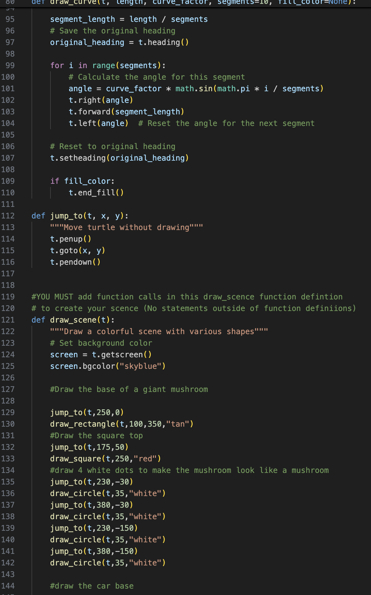
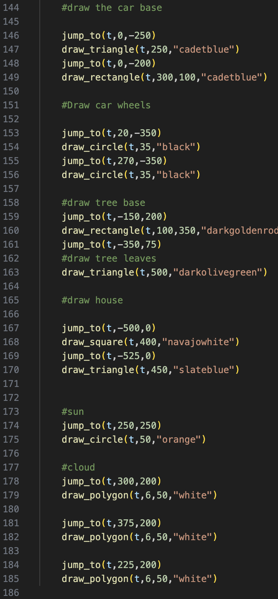
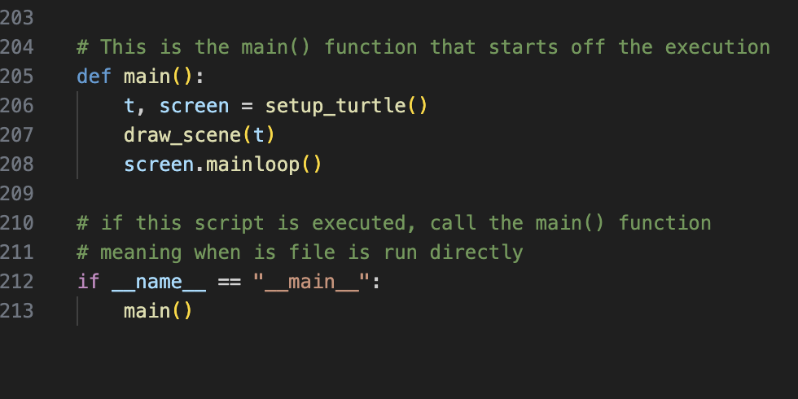

This was a simpler scene in turtle, in that it did not have an in depth perspective. However, I managed to gain a better understanding of code, and am proud of this work for that reason.

This was my first project on turtle, a python library. Turtle allows you to practice basic coding structure and have a visual result afterwards. My first code was very messy, but I am proud of it nontheless!




